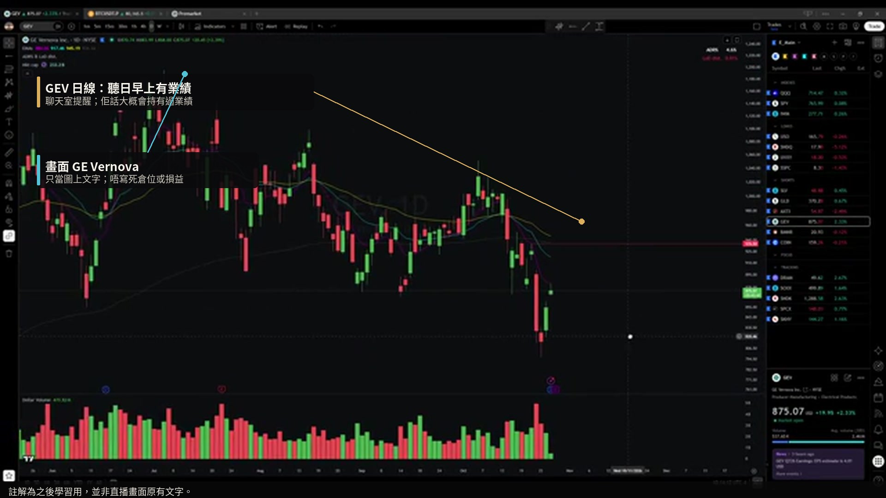

概要
先回應業績時間，再決定點處理
54:13 聊天室提醒 GEV 聽日早上有業績。佢多謝提醒，並話自己大概會持有過呢次業績。畫面係 GEV 日線。
圖一
GEV 日線：聽日早上有業績
直播 54:22

原話
GEV has earnings tomorrow morning. Thanks for reminding. I probably am going to hold it into the earnings.
GEV 聽日早上有業績。多謝提醒。我大概會持有過呢次業績。
點樣讀
呢句係當時對已有倉嘅打算，畫面睇唔到倉位大細或者損益，亦唔係叫人跟住持有過業績。
畫面 GE Vernova 只當圖上文字。
附註
注意事項
- 呢科好短，但有對應走圖同持倉理由，所以獨立成科。